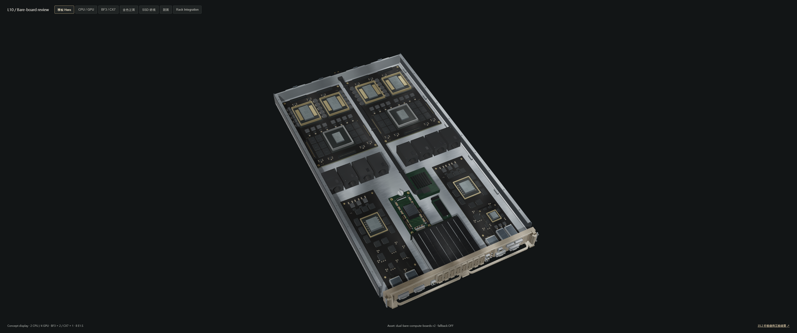
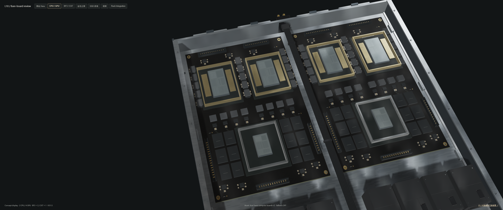
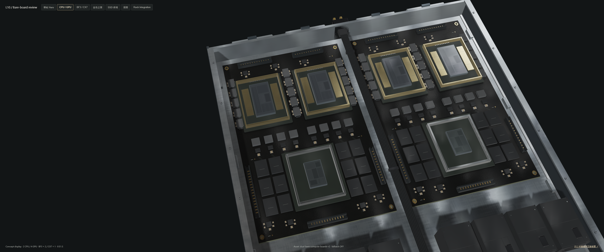
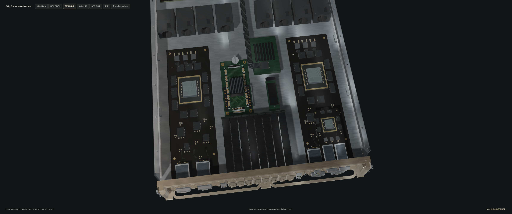
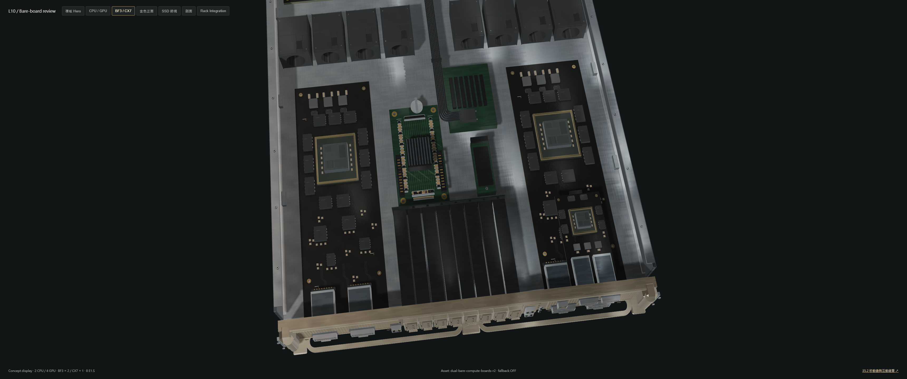
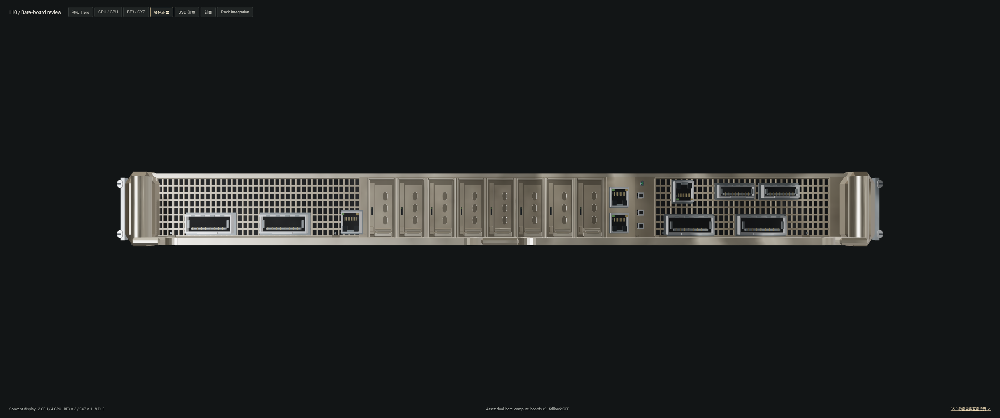

Original PNGs: 3440 × 1440. Before uses exact runtime and asset bytes from 08dbc28af276c6b62e30f9502d6befe4aa4ce145. After uses the recorded candidate resource hashes. Identical fixed cameras, light uniforms, environment, exposure, film pose and resolution. Material shaders may differ and both compiled shader hashes are recorded. No image postprocessing or generated render replacement.






Machine-readable evidence. Automated checks do not establish a photorealism score.